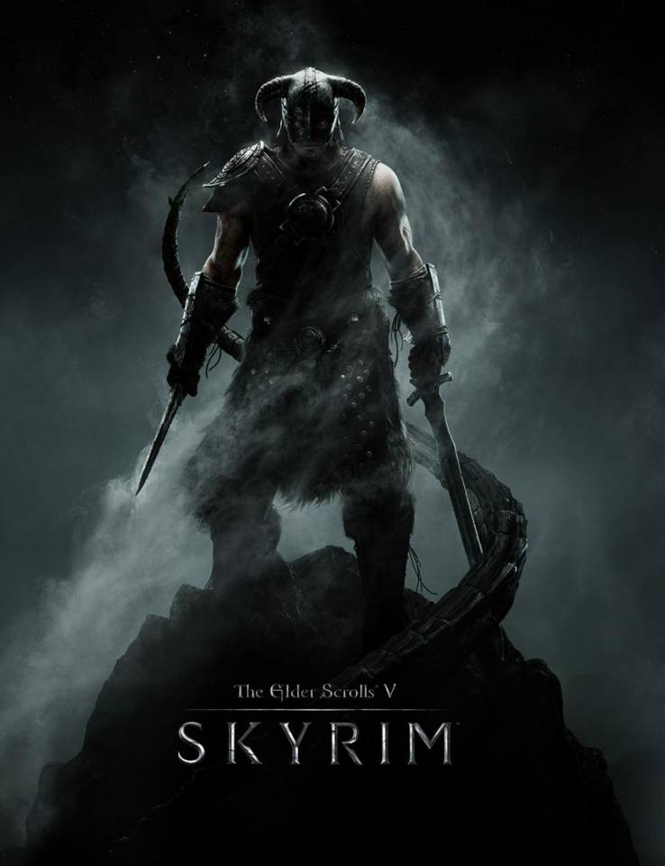

The Elder Scrolls V: Skyrim
The Elder Scrolls V: Skyrim é um jogo eletrônico de RPG de ação desenvolvido pela Bethesda Game Studios e publicado pela Bethesda Softworks. É o quinto jogo principal da série The Elder Scrolls, seguindo The Elder Scrolls IV: Oblivion.



SoundTracks:
Ancient Stones
Secunda